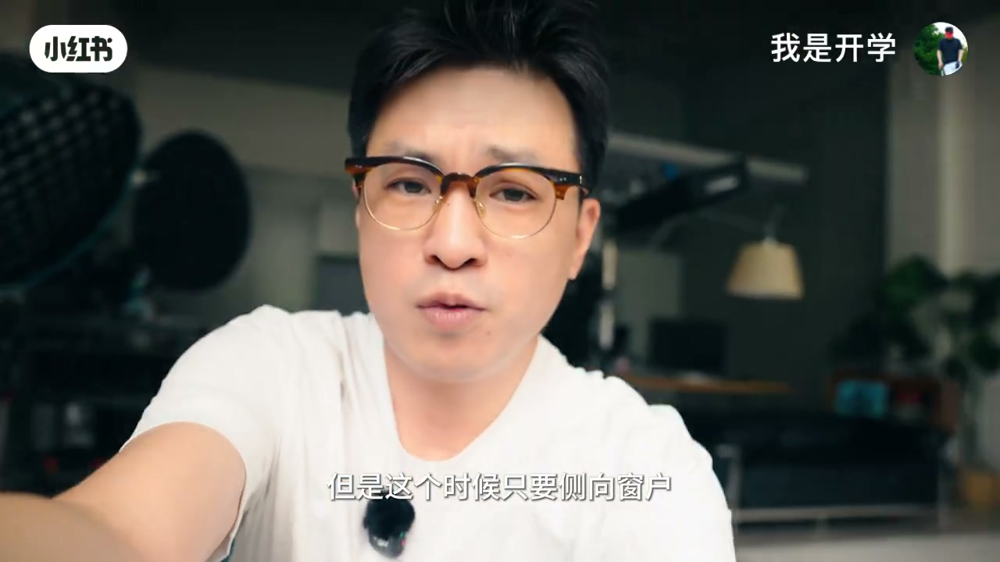
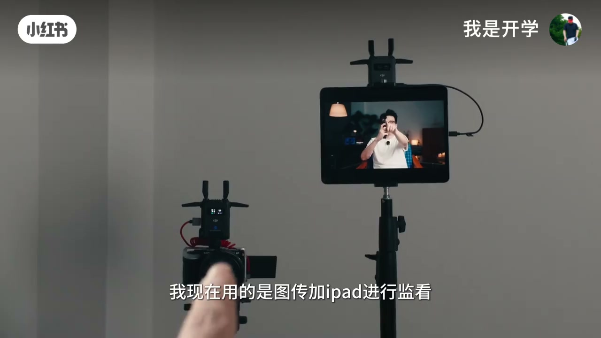
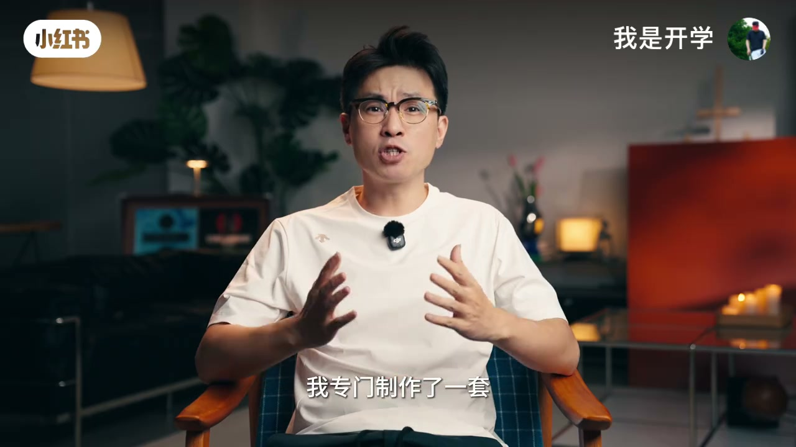

01
中文
掌握这套逻辑，就能还原出高级感。
EN
Master this logic, and you can recreate that premium look.
表达提示premium look（高级感）

Scene English · 摄影布光 · 口播打光万能公式
Light Ratio Is Texture: A Universal Lighting Formula
🎧 语音讲解
Subject Position and the Key Light
情境侧向窗户让面部出现阴影、立体感增强；环境暗时加一盏可控主灯实现明暗分离。
掌握这套逻辑，就能还原出高级感。
Master this logic, and you can recreate that premium look.
表达提示premium look（高级感）
脸朝着光，整个面部的光会比较平。
Facing the light, your whole face looks flat.
表达提示flat（平，无立体感）
加一盏灯，人物瞬间从背景里跳了出来。
Add one light, and you instantly pop out from the background.
表达提示pop out（跳出来/突出）
「立体感」换种说法
「稳定的太阳」的表达
Choosing the Focal Length
情境20mm 广角拉伸适合小空间、50mm 人眼视角但空间要求高、35mm 是小空间口播最实用的折中选择。
20 毫米，人物离相机大约一臂距离。
At 20 millimeters, the subject is about an arm's length from the camera.
表达提示arm's length（一臂距离）
50 毫米观感最接近人眼。
50 millimeters looks the closest to the human eye.
表达提示closest to the human eye（最接近人眼）
35 毫米是小空间口播最实用的焦段。
35 millimeters is the most practical focal length for tight talking-head shots.
表达提示practical（实用）
「广角拉伸」的表达
「虚化分离感」换说法

Monitoring and the Teleprompter
情境图传加 iPad 监看，或 USB-C 连手机免费平替；手机屏幕还能当提示器。
翻转屏也很难看清画面。
Even the flip screen is hard to see.
表达提示flip screen（翻转屏）
可以试试这个免费的软件。
You can try this free app instead.
表达提示free app（免费软件）
眼神不会飘来飘去。
Your eyes won't wander around.
表达提示wander（飘忽/游离）
「监看画面」的表达
「直视观众」换说法
Four Advanced Texture Tricks
情境反光板调阴影强度、背景暖光与主光色温差、轮廓光勾勒发丝、成像镜头加树叶做造型光。
在人物另一侧放一块反光板。
Put a reflector on the other side of the subject.
表达提示reflector（反光板）
背景和主光就有了色温差。
The background and key light now have a color-temperature gap.
表达提示color-temperature gap（色温差）
仿佛背景的暖光洒在人物发丝边缘。
As if the warm background light falls on the edge of the hair.
表达提示falls on the edge（洒在边缘）
「轮廓光」的表达
「斑驳光影」换说法

The Finishing Workflow
情境手机 APP 统一控灯，S-Log3 拍摄，套用定制 LUT 直接出片；一盏灯也能拍出层次。
通过手机 APP 统一管控所有灯光的亮度和色温。
Use the phone app to control every light's brightness and color temperature.
表达提示brightness（亮度）
前机把光线做到位，后期压力非常小。
Nail the light on set, and post-production becomes effortless.
表达提示on set（前机/现场）
一盏灯也能拍出有层次的画面。
Even one light can create a layered shot.
表达提示layered shot（有层次的画面）
「直接出片」的表达
「对光的理解」换说法
脸朝着光会有什么问题？
小空间口播首选什么焦段？
手机屏幕除了监看还能做什么？
轮廓光一般设什么色温？
Side light creates shadows and depth; facing the light keeps the face flat.
Higher ISO also brightens the background and kills the separation.
50mm needs about 1.5m camera distance plus 2-3m of backdrop space.
Texture comes from light ratios and color gaps, not lamp count.